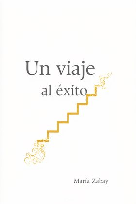
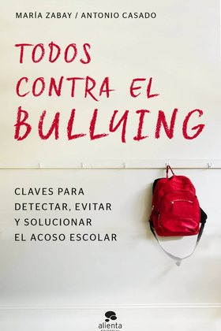

El poder
Quien controla la sala puede descubrir que también forma parte del decorado.

Una vida envidiable. Un hombre que la desprecia.
«Una novela impactante, sorprenderá». JULIA NAVARRO
Un narrador que se incrimina a sí mismo mientras incrimina a los demás.
Alonso no denuncia la corrupción desde fuera: pertenece al mundo que juzga. La tensión nace de esa contradicción, de la inteligencia con la que ve la podredumbre y de todo lo que aún está dispuesto a proteger.
«Alonso Vega es un personaje que irrita, divierte y fascina por igual. Una novela feroz, imposible de dejar».
Luis Alberto de CuencaAlgunos se pagan con dinero. Otros, con la conciencia.
Una novela de alta tensión narrativa y una mirada psicológica penetrante, en la que el humor y la crueldad revelan lo que las buenas maneras ocultan con frecuencia.
Miseria es un retrato de nuestra época; de la decadencia, de la degradación moral de la España y de la Europa de hoy, que va mucho más allá de la política o de una clase social.
“Yo comprendo que es una novela incómoda, pero es una incomodidad por la que hay que pasar”.
“Alonso hereda mucho más que dinero. Hereda una moral. Me interesa hasta qué punto heredamos de nuestras familias, además de propiedades y traumas, explicaciones del mundo; qué significa triunfar, qué significa fracasar, a quién debemos respetar, qué estamos autorizados a hacer para sobrevivir. Eso es lo que le pasa a Alonso”.
Una mirada corrosiva sobre el mundo, narrada por alguien que aplica a los demás la misma crueldad que a sí mismo.
No se concede ninguna superioridad moral. Y no deja nada intacto.
Miseria retrata un mundo de apariencias impecables y vidas íntimamente devastadas. Sus personajes obligan a preguntarse qué ocurre cuando alguien roto llega al último límite: si la caída definitiva termina de destruirlo o si, precisamente entonces, aparece una posibilidad de redención.
Con una prosa lúcida, brillante y descarnada, María Zabay construye en Alonso Vega de Saliente una voz corrosiva, incómoda y por momentos irresistiblemente cómica, emparentada con la ferocidad moral de Houellebecq y con el John Self de Martin Amis, pero arraigada en las élites económicas y familiares de la España contemporánea.
«Cuando todo puede comprarse, la verdad se convierte en el activo más peligroso».
Alonso Vega de Saliente, heredero del imperio de infraestructuras PUENTIA, afronta la repentina muerte de su padre. En un entorno de opulencia y cinismo, la desaparición del patriarca desencadena revelaciones sobre el origen turbio de la fortuna familiar.
Entre una OPA hostil, las investigaciones de la UCO y relaciones donde el deseo también es poder, Alonso descubre que la corrupción reside tanto en los balances financieros como en los vínculos afectivos.
Quien controla la sala puede descubrir que también forma parte del decorado.
Un apellido abre todas las puertas y puede ser la única de la que no se escapa.
Atracción, desafío, dependencia y dominio: otra forma de negociación.
El conflicto empieza cuando sobrevivir exige parecerse a aquello que se desprecia.
«El día que murió mi padre yo derramaba mi simiente en una becaria con mirada de hambre, escogida más por su complacencia que por su carne. No fue amor, ni sexo, ni deseo. Fue soberbia, hastío; una mugre ceremonial que apenas me mantuvo erecto mientras el móvil vibraba con la noticia…»
Puedes leer el fragmento en PDF y escuchar la primera página aquí mismo.
Un vistazo a la novela y un debate sobre las apariencias, el poder y las miserias que se esconden detrás de una vida aparentemente completa.
Dos piezas inspiradas en la novela, pensadas para acercarse a ella sin destripar la historia.
Una introducción breve a Miseria para descubrir de qué va la novela sin revelar la historia.
Las apariencias, el poder y las miserias que se esconden detrás de una vida aparentemente completa.
Ninguno sale intacto.
Alonso observa el mundo con sarcasmo y desprecio, pero pertenece exactamente al universo que juzga. Inteligente, privilegiado y acostumbrado a mandar, empieza a descubrir que heredar un imperio también significa heredar aquello que lo hizo posible.
Prensa, radio, televisión y nuevas conversaciones alrededor del libro.

Valentina
El zapato de la lengua rota
La alumna
El contrato

El amor y otros desastres naturales

Aislada

Manhattan

Diosas de papel

Breve historia de la especie humana

Un viaje al éxito

Liderar con la palabra

Todos contra el bullying
«Con una prosa que fluye como el mejor diálogo de una serie, Valentina —valiente, imperfecta y profundamente humana— nos hace reír, suspirar y emocionarnos».
Carmen Posadas
«Una mirada crítica que combina irreverencia y profundidad. Una voz potente y fresca en la narrativa contemporánea».
El Español
«Pícara, desvergonzada, Valentina se inscribe en la tradición erótica que los autores licenciosos del siglo XVIII calificaban con el eufemismo de “novela filosófica”».
Arturo Pérez-Reverte
«María Zabay es una de esas mentes inquietas que no se conforman con observar la realidad, necesitan diseccionarla».
El Nuevo Digital
Descubre la nueva novela de María Zabay.